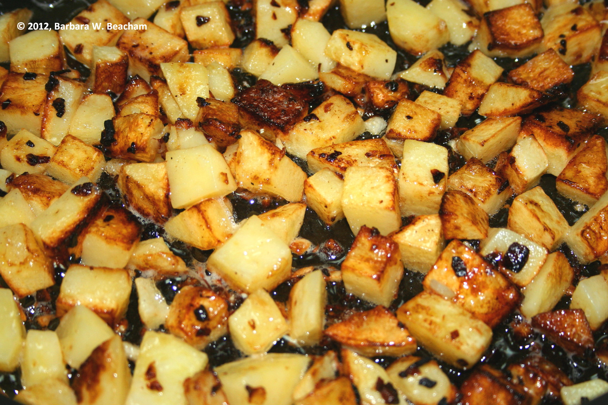

Potatoes Are Life
My gluten free life started off pretty lame. I had always been able to eat any breads, cookies, pies, cakes, etc. Me and gluten were good friends, but then it decided to turn its back on me.
Oh well life goes on, and I found me my new best friend. Now let me make it clear that I have always liked potatoes. Whether they are boiled, fried, steamed, grilled, etc. potatoes are delicious and are always welcome.
Even for breakfast there are hash browns that can be fixed up a plethora of ways. Go the Waffle House route and get them capped, topped, diced, smothered, covered, peppered, or chunked. Allow me to translate that for you.
You can have them with grilled button mushrooms, with Bert’s chili on top, with grilled tomatoes, sautéed with onions, with melted American cheese, with jalapenos, or with grilled hickory smoked ham. So versatile.
French Fries
With that said if it weren’t for potatoes, I would have lost my mind. When it came to me eating, I didn’t know what to do. I relied on french fries for a lot longer than I care to admit.
I quickly learned that not all french fries are made equally. When this forced gluten-free life began I never thought about dedicated fryers for french fries. A silly mistake that I quickly realized when I got a large fry and had adverse effects after eating them.
It is a 50/50 shot when you go somewhere say like McDonalds that you may still have some cross contact. Anytime you go to get some delicious golden salty fries make sure to ask the establishment if they are prepared in a dedicated fryer. You will thank yourself.
Potato Flour
When I learned that there was bread made from potatoes my head exploded. My face looked like the exploding head emoji.
I was truly that shocked. But sure, enough there are breads from Trader Joes that use potato flour along with other ingredients to make bread. Taking wheat flour out of the ingredients is a sure way to make bread safe for all of us celiac and gluten intolerant people.
I Love Potatoes
Potatoes are life. Their versatility is what kept me alive this long into my gluten free life. Now I know a little bit more about living gluten free, so I do not rely on potatoes as my only sustenance anymore.
They are still in my diet, and usually serve as a snack for me when I’m bored. By snack I mean having a large portion of french fries big enough to serve as a meal. Unfortunately I know I need to cut back on the starch, but hey I’m taking it one day at a time.